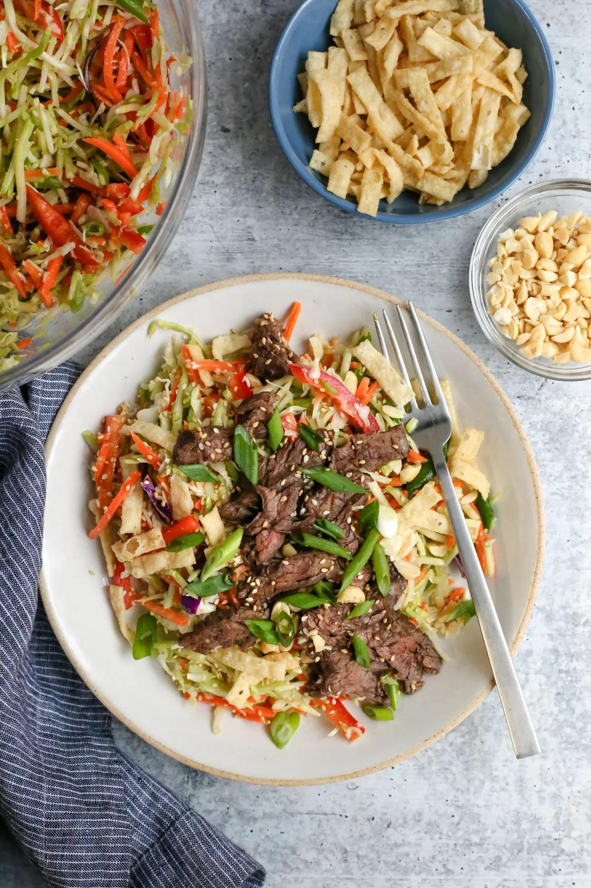
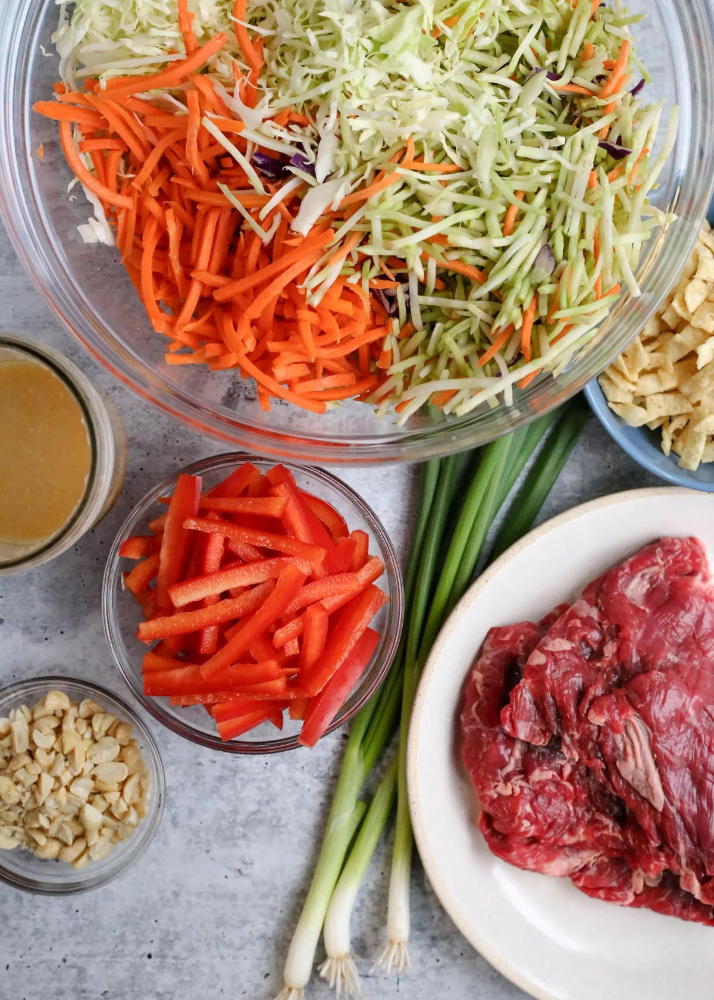
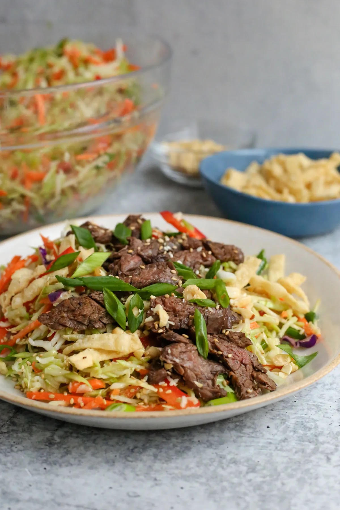

Ingredients You'll Need
Let's start with the obvious: a skirt steak!
- Selection Tips:
look for “inside skirt steak” or “skirt steak” at the meat counter or wherever you're shopping.
You'll see it labeled both ways, but it's the same cut. It comes
from a primal beef cut that also includes the “outside skirt steak”
- What to Look For
Try to find a piece that's at least 1 to 1 1/4 lbs for this skirt steak salad
recipe. This cut is long and flat, with a thick grain and some marbling.
Trim it if you need to but a good butcher will do this for you.
- Seasoning Tips:
Despite its smaller size, skirt steak is big on beef flavor. That's what I'm
going for in a steak salad, so I use very minimal seasoning. A little salt,
a little black pepper, or a little bit of your favorite steak seasoning should be just fine.
In addition to the skirt steak, you'll also need:
- Preshredded or chopped veggies.
There's no lettuce component for this steak salad
or matchstick carrots. All of these options can be found in the produce section of
most grocery stores and will save you tons of time chopping and slicing.
- Red bell pepper and green onions.
But speaking of slicing, you will have to do some
minor prep work for these. This salad will still work without them but I think you'll really
enjoy the bright colors and flavor.
- Crunchy garnishes,
like toasted sesame seeds, crispy wonton strips, and roasted
peanuts
- Miso and grated ginger
or the dressing, plus a neutral-flavored oil, toasted sesame oil,
rice vinegar, and garlic for the dressing.

How To Make Skirt Steak Salad
Lightly season the steak you plan to use for this steak salad recipe and get your grill pan,
cast iron, or grill top nice and hot. Wait until it's heated, then carefully lay the skirt steak on
the grilling surface. Set a timer for 2 1/2 to 3 minutes (or more for thicker cuts). Then flip and
cook for another 2 1/2 to 3 minutes on the other side.
Once done, use a clean pair of tongs to move it over to a cutting board. Wait at least five
minutes before slicing. In the meantime, you can prep the salad ingredients.
The dressing couldn't be easier, especially if you have a jar with a tight-fitting lid. Just add
all the ingredients, seal it up, and give it a nice shake. If you don't have that option, you can
also use a small prep bowl and a fork or whisk to combine everything.
Set that aside and rinse off the red bell pepper and green onions. Pat dry, then slice.
It doesn't need to be perfect, although I really like nice thick slices of green onion for salads.
Use both the green and white portions for stronger flavor, or only the green tops for more
mild flavor. Add them to a large mixing bowl with the broccoli slaw, shredded cabbage, and
shredded carrots. Then just toss everything together until it's evenly mixed.
